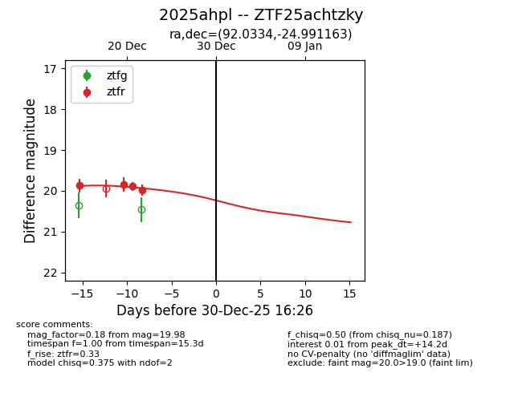
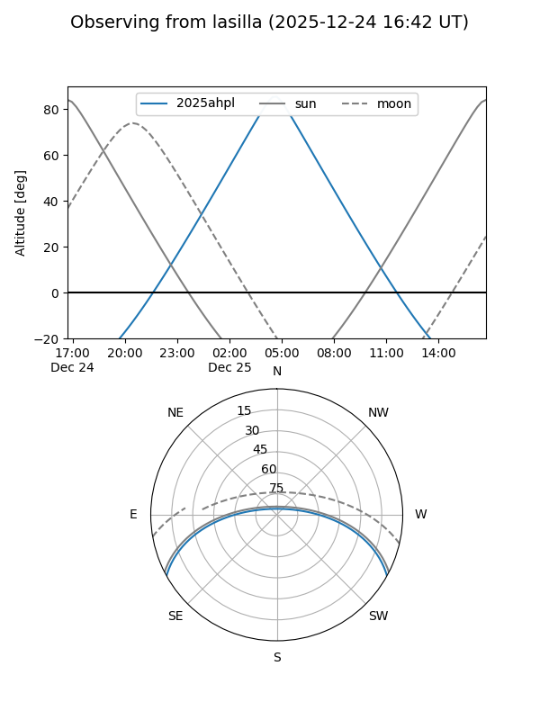
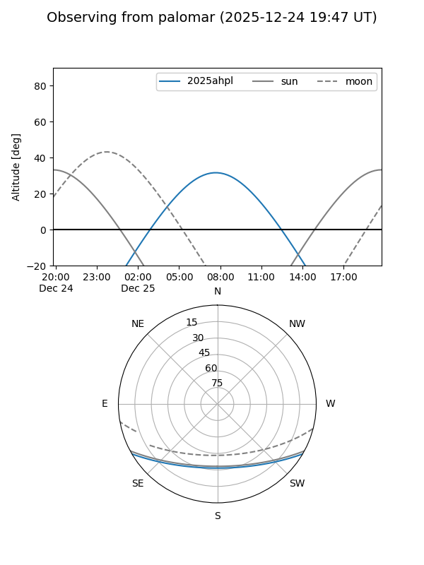
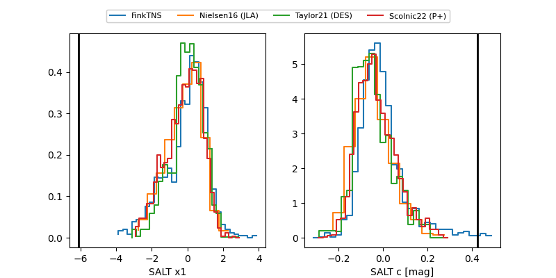

2025ahpl
Target 2025ahpl at 2025-12-30 16:29
Aliases and brokers:
FINK: fink-portal.org/ZTF25achtzky
Lasair: lasair-ztf.lsst.ac.uk/objects/ZTF25achtzky
ALeRCE: alerce.online/object/ZTF25achtzky
TNS: wis-tns.org/object/2025ahpl
YSE: ziggy.ucolick.org/yse/transient_detail/2025ahpl
alt names
ZTF25achtzky (ztf,fink_ztf)
2025ahpl (tns,yse)
Coordinates:
equatorial (ra, dec) = 92.0334,-24.99116
equatorial (HMS+DMS) = 06:08:08.01,-24:59:28.19
galactic (l, b) = (231.4610,-20.13037)
Flags:
Photometry:
last ztfr=19.98
4 ztfr detections
Lightcurve

Visibility


Additional plots
